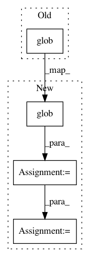

9690e8e185eacc3c81b285ac9f250e07a9c3a61f,build_tools/setup_helpers/extension.py,,_get_srcs,#,63
Before Change
def _get_srcs():
return [str(p) for p in _CSRC_DIR.glob("**/*.cpp")]
def _get_include_dirs():
After Change
def _get_srcs():
srcs = [_CSRC_DIR / "pybind.cpp"]
srcs += list(_CSRC_DIR.glob("sox/**/*.cpp"))
if _BUILD_TRANSDUCER:
srcs += [_CSRC_DIR / "transducer.cpp"]
return [str(path) for path in srcs]
def _get_include_dirs():
In pattern: SUPERPATTERN
Frequency: 3
Non-data size: 4
Instances
Project Name: pytorch/audio
Commit Name: 9690e8e185eacc3c81b285ac9f250e07a9c3a61f
Time: 2021-01-08
Author: 855818+mthrok@users.noreply.github.com
File Name: build_tools/setup_helpers/extension.py
Class Name:
Method Name: _get_srcs
Project Name: EducationalTestingService/skll
Commit Name: 2cf07cbc4b9ca699f53ba6e25dd4b828e01788a3
Time: 2019-10-22
Author: nmadnani@ets.org
File Name: tests/test_input.py
Class Name:
Method Name: tearDown
Project Name: jaakkopasanen/AutoEq
Commit Name: 5798262e2f9d254f37cbe762f89747b7049a8acc
Time: 2020-10-18
Author: jaakko.o.pasanen@gmail.com
File Name: measurements/crinacle/crinacle_crawler.py
Class Name: CrinacleCrawler
Method Name: get_urls